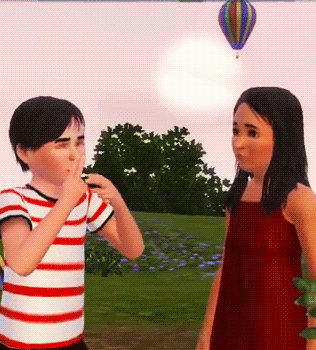
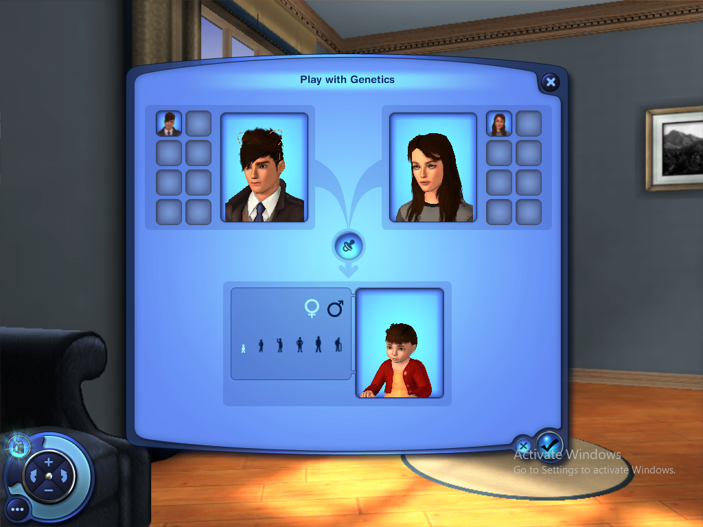
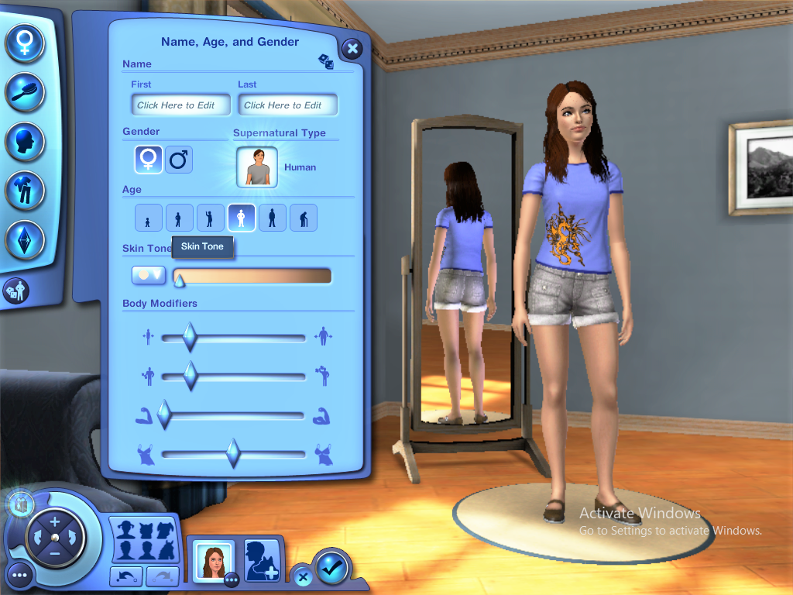
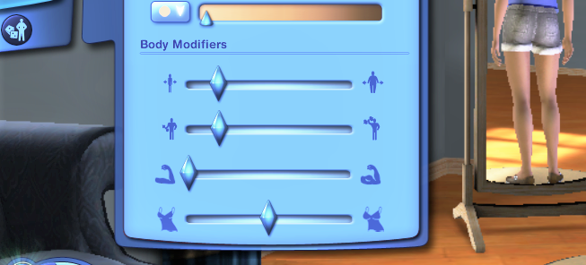
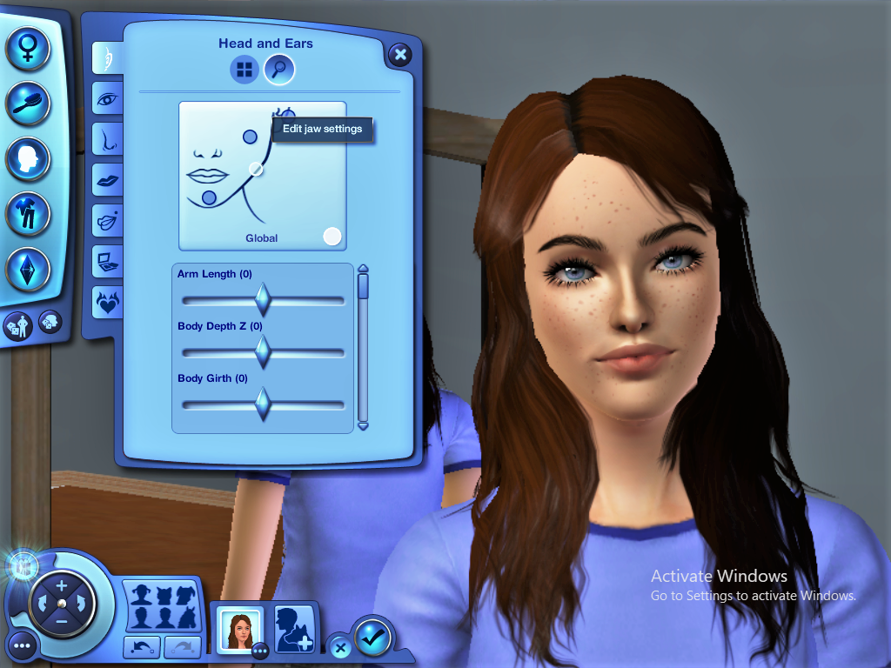
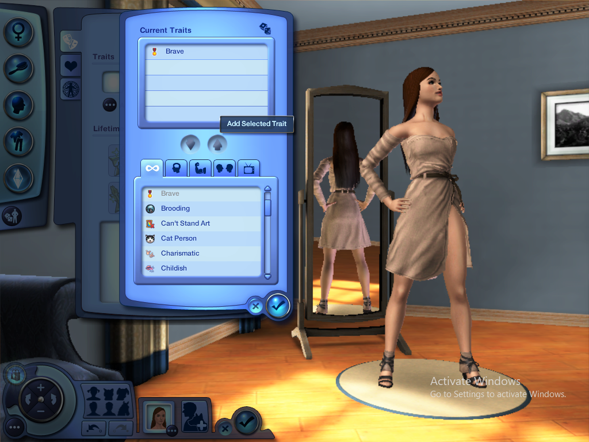
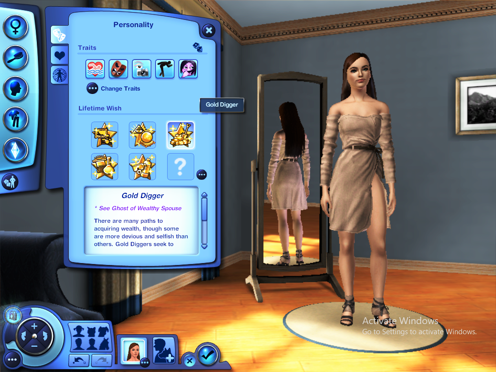

Crearea unui sims
>(cunoscut și sub numele de CAS; uneori stilizat ca Create-A-Sim) este un pas esențial pentru orice jucator. Fiecare avatar(sims) este unic. CAS este folosit pentru a personaliza aspectul și personalitatea unui Sim. De regulă, doar modificările superficiale pot fi făcute la apariția unui Sim odată ce acesta/aceasta este adăugat la joc. Cu toate acestea, există excepții de la acest lucru.Creați o familie este, de asemenea, utilizat pentru a organiza Sims în familii sau gospodării, precum și pentru a personaliza relațiile dintr-o familie. Există 6 pași pentru crearea unui Sim:
|
 |
Culoarea pielii, vârsta și greutatea
>Pentru a crea un Sim, jucătorul va fi prezentat imediat cu o filă în partea din stânga jos a ecranului cartierului, etichetată „Creați Sims”. O pictogramă și un buton similare sunt, de asemenea, prezente în panoul din Edit Town. Faceți clic pe acesta și va încărca imediat ecranul Create-A-Sim. Ca și în jocurile anterioare The Sims, o gospodărie deține maximum opt Sims. În partea de jos a ecranului sunt miniaturi care afișează Sim-urile curente existente în gospodărie. Dând clic pe miniatura unui Sim, apare o fereastră pop-up care oferă opțiunea de a edita, șterge, salva sau partaja Sim. O nouă caracteristică adăugată seriei, care poate fi selectată din acest meniu, este opțiunea de a crea un Twin. Făcând clic pe acest buton, apare o versiune identică a acelui Sim pentru a crea gemeni identici, care pot fi apoi personalizați în continuare. Pe lângă miniatura ultimului Sim, există un buton „plus” care adaugă un Sim nou. După ce se face clic pe acesta, Simul curent este salvat și noul Sim este gata de personalizare. Acest buton este dezactivat odată ce există opt Sims, la fel ca și butonul Creați un geamăn.
>Există, de asemenea, o opțiune numită Joacă cu genetica, care este similară cu „Creează un copil” în The Sims 2. Odată ce au fost creați cel puțin un Sim masculin și cel puțin o Sim feminină, selectând „Joacă cu genetica” se va crea un Sim nou. Aici, alegeți un Sim de sex masculin și un Sim de sex feminin și vedeți cum ar arăta copilul lor, în fiecare dintre cele șase etape create - copil mic, copil, adolescent, adult tânăr, adult și bătrân. Acest instrument este util pentru crearea unei gospodării cu părinți și copii. Create A Sim este împărțit în cinci file diferite, care sunt detaliate mai jos. Sub butoanele de selecție pentru cele cinci secțiuni principale, există un buton "zaruri", care permite jucătorului să creeze aleatoriu un întreg Sim. >Când se creează fața Sim, există un al doilea buton „zaruri”, pe care jucătorul poate face clic pentru a crea în mod aleatoriu fața Sim.
> Butonul de sus al celor cinci file este elementul de bază în care jucătorul alege un nume, vârsta formei corpului și tonul pielii Sim-ului lor. Prenume: Introduceți prenumele Sim. Jucătorii pot avea până la 13 caractere. Nume: Introduceți numele de familie al Sim. Cel mai frecvent nume de familie al gospodăriei va fi numele implicit al gospodăriei, în caz de egalitate, se alege primul introdus. Fiecare Sim poate avea un nume de familie individual, dacă se dorește. Acest lucru este similar cu crearea de studenți în The Sims 2: University. Sex: alegeți bărbat sau femeie. Bărbatul (♂) sau Femeia (♀) vor fi folosite ca pictogramă pentru elementele de bază Vârstă: alegeți dintre următoarele șase vârste:
>Ton de piele: În timp ce jocurile anterioare permiteau doar trei până la patru tonuri de bază, Sims 3 are 6 culori de bază, apoi folosește un glisor pentru a lumina sau întuneca pielea acelui Sim, astfel încât jucătorii să poată decide cât de deschis sau întunecat este tonul pielii unui Sim. este. Patch 38 sau Supernatural adaugă încă 6 tonuri, dintre care două sunt opțiuni de spectru de culoare deschisă și întunecată. În acele opțiuni, glisorul, mai degrabă decât să lumineze sau să întunece pielea Sim, trece printr-o gamă de culori. Seasons face ca tonul implicit al pielii folosit pentru extratereștri să fie disponibil în CAS.
Slidere
>Fila Hair este situată sub fila Noțiuni de bază. Jucătorul poate face click pe acesta pentru a personaliza coafura Sims-ului. Trei file sunt văzute în partea stângă a ecranului. Fila de sus este „Coafură și accesorii pentru păr”, fila din mijloc este „Sprâncene și gene”, iar fila de jos este „Păr facial”. Coafura: culoarea fiecărei coafuri poate fi personalizată cu una dintre cele opt culori de bază. dar jucătorii pot personaliza părul în continuare dând clic pe pictograma pensulei. Culorile individuale pentru baza, rădăcinile, sfaturile și punctele culminante ale părului Sim pot fi personalizate cu o paletă de culori și un glisor. Accesorii pentru coafuri: Accesoriile pentru păr vin cu coafuri prestabilite. Accesoriile pentru păr includ pălării, bentițe și cozi de cal. Acestea pot fi personalizate în mod normal și apoi pot folosi instrumentul Creați un stil pentru a personaliza designul și culoarea pălăriei, cozii sau a bandei de sus a Sim.
>Sprâncene și gene Sprâncene și gene: făcând clic pe fila centrală din stânga din secțiunile „Coafură și accesorii pentru păr” este secțiunea „Sprâncene și gene”. Jucătorii pot folosi paleta de culori și glisorul pentru a personaliza culoarea sprâncenelor făcând clic din nou pe pictograma pensulei. O casetă de selectare permite sprâncenelor să se potrivească cu rădăcinile părului Sim. Este disponibil un glisor pentru personalizarea lungimii genelor Sim. Păr facial: Părul facial este situat în fila din stânga jos a secțiunii „Accesorii pentru păr și păr”. Mai întâi se alege și apoi culoarea poate fi personalizată la fel ca culoarea părului (adică baza, rădăcinile, luminile și sfaturile pot fi personalizate individual) sau se poate alege o culoare de bază. Spre deosebire de Sims 2, miriștii și părul facial nu sunt categorii separate și apar în aceeași categorie. Cu toate acestea, numai bărbații adolescenți și cei mai în vârstă au opțiunea de a personaliza părul facial.
💚 >Secțiunea „arată” poate fi simplă sau complicată. Acolo este concepută fața Sim. Părți specifice ale capului unui Sim pot fi modificate alegând o presetare, sau avansând și folosind glisoare. Această secțiune are un al doilea buton „zaruri”, care va crea o față aleatorie.
În această filă, jucătorii pot alege cu ce vor purta Simșii lor. Cinci categorii includ îmbrăcăminte de zi cu zi, îmbrăcăminte formală, îmbrăcăminte de dormit, îmbrăcăminte sportivă și îmbrăcăminte de baie. În The Sims 3: Seasons, categoria îmbrăcăminte exterioară este adăugată pentru toată lumea. Fiecare tip de haine găsite în fiecare categorie include bluze, pantaloni, ținute pentru tot corpul, încălțăminte (pe care jucătorii le pot alege, spre deosebire de Sims și Sims 2), ochelari, cercei, coliere, mănuși, brățări, inele și șosete. Jucătorii pot crea până la patru ținute în toate categoriile. Ținutele pot fi personalizate în timpul jocului făcând clic pe un șifonier. Culoarea și modelul hainelor pot fi alese de jucător cu instrumentul Creați un stil. Cu toate acestea, copiii mici nu au opțiunea de a alege și / sau personaliza îmbrăcăminte sportivă, costume de baie și accesorii.
💚|  |  |
>Jucătorii pot alege oricare dintre trăsăturile disponibile în meniu, de asemenea, pot crea mâncarea, muzica și culoarea preferată, vocea Sim (copiii mici au un glisor vocal, copiii au două glisoare vocale, iar adolescenții și cei mai mari au trei glisoare vocale) și dorința de viață a Sim-ului bazată pe personalitatea fiecărui sims (care era o dorință aleatorie de-a lungul vieții în The Sims . Semnele zodiacale sunt reintroduse în The Sims 3: Late Night și Patch 17, ceea ce îi poate face pe Sims mai prietenoși cu alți Sims cu trăsături compatibile. Jucătorii pot scrie, de asemenea, o biografie a Sim-urilor lor. Cu toate acestea, copiii mici, copiii și adolescenții nu au opțiunea de a-și alege dorința de viață. Lista completă a trăsăturilor se găsește aici:
| Tipuri de personalitati-mental | ||
|---|---|---|
| Absent-minded | Excitable | Neurotic |
| Artistic | Gatherer | Nurturing |
| Avant Garde | Genius | Perceptive |
| Bookworm | Green thumb | Photographer's eye |
| Can't stand art | Handy | Savvy sculptor |
| Computer whiz | Insane | Unstable |
| Eccentric | Natural cook | Virtuso |
| Tipuri de personalitati-fizic | ||
|---|---|---|
| Athletic | Heavy sleeper | Lucky |
| Brave | Hydrophobic | Neat |
| Clumsy | Light sleeper | Never nude |
| Couch potato | Loves the cold | Sailor |
| CCoward | Loves the heat | Snob |
| Discipliner | Loves to swim | Unlucky |
| Tipuri de personalitati-social | ||
|---|---|---|
| Born salesperson | Great kisser | Party animal |
| Brooding | Grumpy | Proper |
| Charismatic | Hopeless Romantic | Schmoozer |
| Commintment isues | Innapropriate | Shy |
| Dislikes children | Irresistible | Snob |
| Diva | Loner | Social butterfly |
| Dramatic | Loser | Socially awkward |
| Easily impressed | Mean spirited | Supernatural fan |
| Flirty | Mooch | Supernatural skeptic |
| Friendly | Unflirty | Good sense of humor |
| Tipuri de personalitati-stil de viață | ||
|---|---|---|
| Adventurous | Equestrian | Over-emotional |
| Ambitious | Evil | Perfectionist |
| Angler | Family-oriented | Animal lover |
| Frugal | Star quality | Bot fan |
| Good | Childish | Vegetarian |
| Hot-headed | Loner | Daredevil |
| Kleptomaniac | Workaholic | Loves the outdoors |